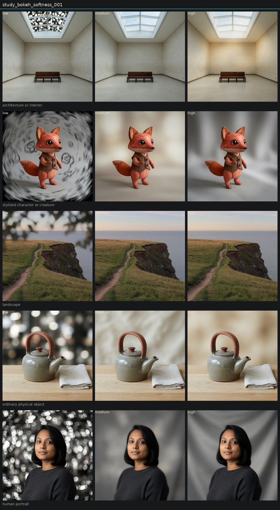

Controlled variation of bokeh softness
Hold subject via locked anchor images. image_edit each anchor to low, medium, and high of one candidate. Do not change other dimensions on purpose.
When a subject plane exists, the field creams and the subject stays sharp: teapot, fox, portrait. The deep-focus gallery has no plane, so the whole room defocuses. Distinct, conditional on geometry.

human portrait

low

medium

high
ordinary physical object

low

medium

high
architecture or interior

low

medium

high
landscape

low

medium

high
stylized character or creature

low

medium

high
Entanglement
- Portrait and fox gained invented backdrop folds so the field could dissolve.
- Architecture high is optical softness, not bokeh.
Next
- Bokeh study only on frames that already have a clear subject/field split.